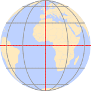

Week 2-2
Projections, Measures
Picking up again …
Yesterday, we discussed the simple feature standard
- Geometries (type, dimension, and structure)
- Empty, Valid, SimpleEncoding (WKT & WKB)
A set of operations
And the implementation of the simple features standard in R
sfg: a single feature geometry
sfc: a set of geometries (
sfg) stored as a listsf: a
sfclist joined with adata.frame(attributes)
This R implementation is ideal/special because it achieves the simple feature abstract goal of:
“A simple feature is defined by the OpenGIS Abstract specification to have both spatial and non-spatial attributes…” - standard.
The shapefile/GIS traditional GIS view does not do this and seperates geometry (shp), from projection (prj), from data (dbf) and relates them through an shx file
Integration with tidyverse
We saw how the
dplyrverbs still work on ansfobject sincesfextends the data.frame classHow
geom_sfsupport mapping (“spatial plotting”) inggplotHow to read spatial data into R via GDAL drivers:
- spatial files (
read_sf) - flat files via
st_as_sf
- spatial files (
Integration with a few
GEOSgeometry operations like:- st_combine()
- st_union()
Yesterday …
1 feature: resoloved and combined:
So what?
Lets imagine we want to know the distance from Denver to the nearest state border:
To do this, we need to:
1: define Denver as a geometry in a CRS
2: determine the correct geometry types / representation
3: calculate the distance between (1) and (2)
1. Make “Denver” in the CRS of our states
denver = data.frame(y = 39.7392, x = -104.9903, name = "Denver")
(denver_sf = st_as_sf(denver, coords = c("x", "y"), crs = 4326))
#> Simple feature collection with 1 feature and 1 field
#> Geometry type: POINT
#> Dimension: XY
#> Bounding box: xmin: -104.9903 ymin: 39.7392 xmax: -104.9903 ymax: 39.7392
#> Geodetic CRS: WGS 84
#> name geometry
#> 1 Denver POINT (-104.9903 39.7392)2. Determine the 3 closest states:
#> Simple feature collection with 49 features and 12 fields
#> Geometry type: MULTIPOLYGON
#> Dimension: XY
#> Bounding box: xmin: -124.7258 ymin: 24.49813 xmax: -66.9499 ymax: 49.38436
#> Geodetic CRS: WGS 84
#> First 10 features:
#> statefp statens affgeoid geoid stusps name lsad aland
#> 1 06 01779778 0400000US06 06 CA California 00 403671196038
#> 2 55 01779806 0400000US55 55 WI Wisconsin 00 140292246684
#> 3 16 01779783 0400000US16 16 ID Idaho 00 214049923496
#> 4 27 00662849 0400000US27 27 MN Minnesota 00 206232157570
#> 5 19 01779785 0400000US19 19 IA Iowa 00 144659688848
#> 6 29 01779791 0400000US29 29 MO Missouri 00 178052563675
#> 7 24 01714934 0400000US24 24 MD Maryland 00 25151895765
#> 8 41 01155107 0400000US41 41 OR Oregon 00 248628426864
#> 9 26 01779789 0400000US26 26 MI Michigan 00 146614604273
#> 10 30 00767982 0400000US30 30 MT Montana 00 376973673895
#> awater state_name state_abbr jurisdiction_type
#> 1 20294133830 California CA state
#> 2 29343721650 Wisconsin WI state
#> 3 2391577745 Idaho ID state
#> 4 18949864226 Minnesota MN state
#> 5 1085996889 Iowa IA state
#> 6 2487215790 Missouri MO state
#> 7 6979171386 Maryland MD state
#> 8 6170953359 Oregon OR state
#> 9 103872203398 Michigan MI state
#> 10 3866689601 Montana MT state
#> geometry
#> 1 MULTIPOLYGON (((-118.594 33...
#> 2 MULTIPOLYGON (((-86.93428 4...
#> 3 MULTIPOLYGON (((-117.243 44...
#> 4 MULTIPOLYGON (((-97.22904 4...
#> 5 MULTIPOLYGON (((-96.62187 4...
#> 6 MULTIPOLYGON (((-95.76564 4...
#> 7 MULTIPOLYGON (((-76.04621 3...
#> 8 MULTIPOLYGON (((-124.5524 4...
#> 9 MULTIPOLYGON (((-84.61622 4...
#> 10 MULTIPOLYGON (((-116.0492 4...2. Determine the 3 closest states:
#> Simple feature collection with 49 features and 1 field
#> Geometry type: MULTIPOLYGON
#> Dimension: XY
#> Bounding box: xmin: -124.7258 ymin: 24.49813 xmax: -66.9499 ymax: 49.38436
#> Geodetic CRS: WGS 84
#> First 10 features:
#> state_name geometry
#> 1 California MULTIPOLYGON (((-118.594 33...
#> 2 Wisconsin MULTIPOLYGON (((-86.93428 4...
#> 3 Idaho MULTIPOLYGON (((-117.243 44...
#> 4 Minnesota MULTIPOLYGON (((-97.22904 4...
#> 5 Iowa MULTIPOLYGON (((-96.62187 4...
#> 6 Missouri MULTIPOLYGON (((-95.76564 4...
#> 7 Maryland MULTIPOLYGON (((-76.04621 3...
#> 8 Oregon MULTIPOLYGON (((-124.5524 4...
#> 9 Michigan MULTIPOLYGON (((-84.61622 4...
#> 10 Montana MULTIPOLYGON (((-116.0492 4...2. Determine the 3 closest states:
#> Simple feature collection with 49 features and 2 fields
#> Geometry type: MULTIPOLYGON
#> Dimension: XY
#> Bounding box: xmin: -124.7258 ymin: 24.49813 xmax: -66.9499 ymax: 49.38436
#> Geodetic CRS: WGS 84
#> First 10 features:
#> state_name geometry dist
#> 1 California MULTIPOLYGON (((-118.594 33... 1000950.5 [m]
#> 2 Wisconsin MULTIPOLYGON (((-86.93428 4... 1146522.6 [m]
#> 3 Idaho MULTIPOLYGON (((-117.243 44... 567809.5 [m]
#> 4 Minnesota MULTIPOLYGON (((-97.22904 4... 823100.9 [m]
#> 5 Iowa MULTIPOLYGON (((-96.62187 4... 773889.8 [m]
#> 6 Missouri MULTIPOLYGON (((-95.76564 4... 789142.1 [m]
#> 7 Maryland MULTIPOLYGON (((-76.04621 3... 2174383.4 [m]
#> 8 Oregon MULTIPOLYGON (((-124.5524 4... 1041819.1 [m]
#> 9 Michigan MULTIPOLYGON (((-84.61622 4... 1401455.7 [m]
#> 10 Montana MULTIPOLYGON (((-116.0492 4... 585011.2 [m]2. Determine the 3 closest states:
#> Simple feature collection with 3 features and 2 fields
#> Geometry type: MULTIPOLYGON
#> Dimension: XY
#> Bounding box: xmin: -111.0569 ymin: 36.99243 xmax: -95.30829 ymax: 45.0059
#> Geodetic CRS: WGS 84
#> state_name dist geometry
#> 1 Colorado 0.0 [m] MULTIPOLYGON (((-109.06 38....
#> 2 Wyoming 139988.4 [m] MULTIPOLYGON (((-111.0569 4...
#> 3 Nebraska 161243.2 [m] MULTIPOLYGON (((-104.0531 4...2. Determine the 3 closest states:
#> Simple feature collection with 3 features and 2 fields
#> Geometry type: MULTIPOLYGON
#> Dimension: XY
#> Bounding box: xmin: -111.0569 ymin: 36.99243 xmax: -95.30829 ymax: 45.0059
#> Geodetic CRS: WGS 84
#> state_name dist geometry
#> 1 Colorado 0.0 [m] MULTIPOLYGON (((-109.06 38....
#> 2 Wyoming 139988.4 [m] MULTIPOLYGON (((-111.0569 4...
#> 3 Nebraska 161243.2 [m] MULTIPOLYGON (((-104.0531 4...- That’s close, but the distance to Colorado is 0, that’s not a state border.
Geometry Selection
Polygon(therefore MULTIPOLGYGONS) describe areas!- The distance to a
pointin apolygonto that polygon is 0.
To determine distance to border we need a linear representation:
#> Simple feature collection with 49 features and 12 fields
#> Geometry type: MULTIPOLYGON
#> Dimension: XY
#> Bounding box: xmin: -124.7258 ymin: 24.49813 xmax: -66.9499 ymax: 49.38436
#> Geodetic CRS: WGS 84
#> First 10 features:
#> statefp statens affgeoid geoid stusps name lsad aland
#> 1 06 01779778 0400000US06 06 CA California 00 403671196038
#> 2 55 01779806 0400000US55 55 WI Wisconsin 00 140292246684
#> 3 16 01779783 0400000US16 16 ID Idaho 00 214049923496
#> 4 27 00662849 0400000US27 27 MN Minnesota 00 206232157570
#> 5 19 01779785 0400000US19 19 IA Iowa 00 144659688848
#> 6 29 01779791 0400000US29 29 MO Missouri 00 178052563675
#> 7 24 01714934 0400000US24 24 MD Maryland 00 25151895765
#> 8 41 01155107 0400000US41 41 OR Oregon 00 248628426864
#> 9 26 01779789 0400000US26 26 MI Michigan 00 146614604273
#> 10 30 00767982 0400000US30 30 MT Montana 00 376973673895
#> awater state_name state_abbr jurisdiction_type
#> 1 20294133830 California CA state
#> 2 29343721650 Wisconsin WI state
#> 3 2391577745 Idaho ID state
#> 4 18949864226 Minnesota MN state
#> 5 1085996889 Iowa IA state
#> 6 2487215790 Missouri MO state
#> 7 6979171386 Maryland MD state
#> 8 6170953359 Oregon OR state
#> 9 103872203398 Michigan MI state
#> 10 3866689601 Montana MT state
#> geometry
#> 1 MULTIPOLYGON (((-118.594 33...
#> 2 MULTIPOLYGON (((-86.93428 4...
#> 3 MULTIPOLYGON (((-117.243 44...
#> 4 MULTIPOLYGON (((-97.22904 4...
#> 5 MULTIPOLYGON (((-96.62187 4...
#> 6 MULTIPOLYGON (((-95.76564 4...
#> 7 MULTIPOLYGON (((-76.04621 3...
#> 8 MULTIPOLYGON (((-124.5524 4...
#> 9 MULTIPOLYGON (((-84.61622 4...
#> 10 MULTIPOLYGON (((-116.0492 4...To determine distance to border we need a linear representation:
#> Simple feature collection with 49 features and 1 field
#> Geometry type: MULTIPOLYGON
#> Dimension: XY
#> Bounding box: xmin: -124.7258 ymin: 24.49813 xmax: -66.9499 ymax: 49.38436
#> Geodetic CRS: WGS 84
#> First 10 features:
#> state_name geometry
#> 1 California MULTIPOLYGON (((-118.594 33...
#> 2 Wisconsin MULTIPOLYGON (((-86.93428 4...
#> 3 Idaho MULTIPOLYGON (((-117.243 44...
#> 4 Minnesota MULTIPOLYGON (((-97.22904 4...
#> 5 Iowa MULTIPOLYGON (((-96.62187 4...
#> 6 Missouri MULTIPOLYGON (((-95.76564 4...
#> 7 Maryland MULTIPOLYGON (((-76.04621 3...
#> 8 Oregon MULTIPOLYGON (((-124.5524 4...
#> 9 Michigan MULTIPOLYGON (((-84.61622 4...
#> 10 Montana MULTIPOLYGON (((-116.0492 4...To determine distance to border we need a linear representation:
#> Simple feature collection with 49 features and 1 field
#> Geometry type: MULTILINESTRING
#> Dimension: XY
#> Bounding box: xmin: -124.7258 ymin: 24.49813 xmax: -66.9499 ymax: 49.38436
#> Geodetic CRS: WGS 84
#> First 10 features:
#> state_name geometry
#> 1 California MULTILINESTRING ((-118.594 ...
#> 2 Wisconsin MULTILINESTRING ((-86.93428...
#> 3 Idaho MULTILINESTRING ((-117.243 ...
#> 4 Minnesota MULTILINESTRING ((-97.22904...
#> 5 Iowa MULTILINESTRING ((-96.62187...
#> 6 Missouri MULTILINESTRING ((-95.76564...
#> 7 Maryland MULTILINESTRING ((-76.04621...
#> 8 Oregon MULTILINESTRING ((-124.5524...
#> 9 Michigan MULTILINESTRING ((-84.61622...
#> 10 Montana MULTILINESTRING ((-116.0492...To determine distance to border we need a linear representation:
#> Simple feature collection with 49 features and 2 fields
#> Geometry type: MULTILINESTRING
#> Dimension: XY
#> Bounding box: xmin: -124.7258 ymin: 24.49813 xmax: -66.9499 ymax: 49.38436
#> Geodetic CRS: WGS 84
#> First 10 features:
#> state_name geometry dist
#> 1 California MULTILINESTRING ((-118.594 ... 1000950.5 [m]
#> 2 Wisconsin MULTILINESTRING ((-86.93428... 1146522.6 [m]
#> 3 Idaho MULTILINESTRING ((-117.243 ... 567809.5 [m]
#> 4 Minnesota MULTILINESTRING ((-97.22904... 823100.9 [m]
#> 5 Iowa MULTILINESTRING ((-96.62187... 773889.8 [m]
#> 6 Missouri MULTILINESTRING ((-95.76564... 789142.1 [m]
#> 7 Maryland MULTILINESTRING ((-76.04621... 2174383.4 [m]
#> 8 Oregon MULTILINESTRING ((-124.5524... 1041819.1 [m]
#> 9 Michigan MULTILINESTRING ((-84.61622... 1401455.7 [m]
#> 10 Montana MULTILINESTRING ((-116.0492... 585011.2 [m]To determine distance to border we need a linear representation:
#> Simple feature collection with 3 features and 2 fields
#> Geometry type: MULTILINESTRING
#> Dimension: XY
#> Bounding box: xmin: -111.0569 ymin: 36.99243 xmax: -95.30829 ymax: 45.0059
#> Geodetic CRS: WGS 84
#> state_name dist geometry
#> 1 Colorado 139988.4 [m] MULTILINESTRING ((-109.06 3...
#> 2 Wyoming 139988.4 [m] MULTILINESTRING ((-111.0569...
#> 3 Nebraska 161243.2 [m] MULTILINESTRING ((-104.0531...To determine distance to border we need a linear representation:
#> Simple feature collection with 3 features and 2 fields
#> Geometry type: MULTILINESTRING
#> Dimension: XY
#> Bounding box: xmin: -111.0569 ymin: 36.99243 xmax: -95.30829 ymax: 45.0059
#> Geodetic CRS: WGS 84
#> state_name dist geometry
#> 1 Colorado 139988.4 [m] MULTILINESTRING ((-109.06 3...
#> 2 Wyoming 139988.4 [m] MULTILINESTRING ((-111.0569...
#> 3 Nebraska 161243.2 [m] MULTILINESTRING ((-104.0531...Good. However, we were only interested in the distance to the closest border not to ALL boarders. Therefore we calculated 48 (49 - 1) more distances then needed!
While this is not to complex for 1 <-> 49 features imagine we had 28,000+ (like) your lab!
That would result in 1,344,000 more calculations then needed …
Revisting the idea of the feature level:
A “feature” can “be part of the whole” or the whole
A island (POLYGON), or a set of islands acting as 1 unit (MULTIPOLYGON)
A city (POINT), or a set of cities meeting a condition (MULTIPOINT)
A road (LINESTRING), or a route (MULTILINESTRING)
Since we want the distance to the nearest border, regardless of the state. Our feature is the set of borders with preserved boundaries.
In other words, a 1 feature
MULTILINESTRING
The same principle would apply if the question was “distance to national border”
The stickness of sfc column
- A simple features object (sf) is the connection of a
sfclist-column anddata.frameof attributes

- This binding is unique compared to other column bindings built with things like
dplyr::bind_cols()cbind()do.call(cbind, list())
The stickness of sfc column
- Geometry columns are “sticky” meaning they persist through data manipulation:
USAboundaries::us_states() |>
select(name) |>
slice(1:2)
#> Simple feature collection with 2 features and 1 field
#> Geometry type: MULTIPOLYGON
#> Dimension: XY
#> Bounding box: xmin: -124.4096 ymin: 32.53416 xmax: -86.80587 ymax: 47.05468
#> Geodetic CRS: WGS 84
#> name geometry
#> 1 California MULTIPOLYGON (((-118.594 33...
#> 2 Wisconsin MULTIPOLYGON (((-86.93428 4...Dropping the geometry column requires dropping the geometry via sf:
Or cohersing the sf object to a data.frame:
Coordinate Systems
- What makes a feature geometry spatial is the reference system…

Coordinate Systems
Coordinate Reference Systems (CRS) defines how spatial features relate to the surface of the Earth.
CRSs are either geographic or projected…
CRSs are measurement units for coordinates:
sf tools
In sf we have three tools for exploring, define, and changing CRS systems:
st_crs : Retrieve coordinate reference system from sf or sfc object
st_set_crs : Set or replace coordinate reference system from object
st_transform : Transform or convert coordinates of simple feature
Again, “st” (like PostGIS) denotes it is an operation that can work on a ” s patial t ype ”
Geographic Coordinate Systms (GCS)
A GCS identifies locations on the curved surface of the earth.
Locations are measured in angular units from the center of the earth relative to the plane defined by the equator and the plane defined by the prime meridian.
The vertical angle describes the latitude and the horizontal angle the longitude
In most coordinate systems, the North-South and East-West directions are encoded as +/-.
North and East are positive (+) and South and West are negative (-) sign.
A GCS is defined by 3 components:
an ellipsoid
a geoid
a datum
Sphere and Ellipsoid
Assuming that the earth is a perfect sphere simplifies calculations and works for small-scale maps (maps that show a large area of the earth).
But … the earth is not a sphere do to its rotation inducing a centripetal force along the equator.
This results in an equatorial axis that is roughly 21 km longer than the polar axis.
To account for this, the earth is modeled as an ellipsoid (slighty squished sphere) defined by two radii:
- the semi-major axis (along the equatorial radius)
- the semi-minor axis (along the polar radius)
Thanks to satellite and computational capabilities our estimates of these radii are be quite precise
The semi-major axis is 6,378,137 m
The semi-minor axis is 6,356,752 m
Differences in distance along the surfaces of an ellipsoid vs. a perfect sphere are small but measurable (the difference can be as high as 20 km)


Geoid
The ellipsoid gives us the earths form as a perfectly smooth object
But … the earth is not perfectly smooth
Deviations from the perfect sphere are measurable and can influence measurements.
A geoid is a mathematical model fore representing these deviations
We are not talking about mountains and ocean trenches but the earth’s gravitational potential which is tied to the flow of the earth’s hot and fluid core.
Therefore the geoid is constantly changing, albeit a large temporal scale.
The measurement and representation of the earth’s shape is at the heart of
geodesy

NASA’s geoid models
Datum
So how are we to reconcile our need to work with a (simple) mathematical model of the earth’s shape with the undulating nature of the geoid?
We align the geoid with the ellipsoid to map the the earths departures from the smooth assumption
The alignment can be local where the ellipsoid surface is closely fit to the geoid at a particular location on the earth’s surface
or
geocentric where the ellipsoid is aligned with the center of the earth.
The alignment of the smooth ellipsoid to the geoid model defines a datum.
Local Datums
There are many local datums to choose from
The choice of datum is largely driven by the location
When working in the USA, a the North American Datum of 1927 (or NAD27 for short) is standard
- NAD27 is not well suited for other parts of the world.
Examples of common local datums are shown in the following table:
| Local datum | Acronym | Best for | Comment |
|---|---|---|---|
| North American Datum of 1927 | NAD27 | Continental US | This is an old datum but still prevalent |
| European Datum of 1950 | ED50 | Western Europe | Developed after World War II and still quite popular |
| World Geodetic System 1972 | WGS72 | Global | Developed by the Department of Defense. |
Geocentric Datum
Many modern datums use a geocentric alignment
World Geodetic Survey for 1984 (WGS84)
North American Datums of 1983 (NAD83)
Most popular geocentric datums use the WGS84 ellipsoid or the GRS80 ellipsoid which share nearly identical semi-major and semi-minor axes
| Geocentric datum | Acronym | Best for | Comment |
|---|---|---|---|
| North American Datum of 1983 | NAD83 | Continental US | This is one of the most popular modern datums for the contiguous US. |
| European Terrestrial Reference System 1989 | ETRS89 | Western Europe | This is the most popular modern datum for much of Europe. |
| World Geodetic System 1984 | WGS84 | Global | Developed by the Department of Defense. |
Note
NAD 27 is based on Clarke Ellipsoid of 1866 which is calculated by manual surveying. NAD83 is based on the Geodetic Reference System (GRS) of 1980.
Building a GCS
So, a GCS is defined by the ellipsoid model and its alignment to the geoid defining the datum.
Smooth Sphere - Mathmatical Geoid (in angular units)
Projected Coordinate Systems
The surface of the earth is curved but maps (and to data GIS) is flat.
A projected coordinate system (PCS) is a reference system for identifying locations and measuring features on a flat (2D) surfaces. I
Projected coordinate systems have an origin, an x axis, a y axis, and a linear unit of measure.
Going from a GCS to a PCS requires mathematical transformations.
There are three main groups of projection types:
- conic
- cylindrical
- planar
Projection Types:

In all cases, distortion is minimized at the line/point of tangency (denoted by black line/point)
Distortions are minimized along the tangency lines and increase with the distance from those lines.
Plannar
A planar projection projects data onto a flat surface touching the globe at a point or along 1 line of tangency.
Typically used to map polar regions.
Cylindrical
A cylindrical projection maps the surface onto a cylinder.
This projection could also be created by touching the Earth’s surface along 1 or 2 lines of tangency
Most often when mapping the entire world.
Conic
In a conic projection, the Earth’s surface is projected onto a cone along 1 or 2 lines of tangency
Therefore, it is the best suited for maps of mid-latitude areas.
Spatial Properties
All projections distort real-world geographic features.
Think about trying to unpeel an orange while preserving the skin
The four spatial properties that are subject to distortion are: shape, area, distance and direction
A map that preserves shape is called
conformal;one that preserves area is called
equal-area;one that preserves distance is called
equidistantone that preserves direction is called
azimuthalEach map projection can preserve only one or two of the four spatial properties.
Often, projections are named after the spatial properties they preserve.
When working with small-scale (large area) maps and when multiple spatial properties are needed, it is best to break the analyses across projections to minimize errors associated with spatial distortion.
Setting CRSs/PCSs
- We saw that
sfcobjects have two attributes to store a CRS:epsgandproj4string
This implies that all geometries in a geometry list-column (sfc) must have the same CRS.
proj4stringis a generic, string-based description of a CRS, understood by PROJIt defines projection types and parameter values for particular projections,
As a result it can cover an infinite amount of different projections.
epsgis the integer ID for a known CRS that can be resolved into aproj4string.- This is somewhat equivalent to the idea that a 6-digit FIP code can be resolved to a state/county pair
Some
proj4stringvalues can resolved back into their correspondingepsgID, but this does not always work.The importance of having
epsgvalues stored with data besidesproj4stringvalues is that theepsgrefers to particular, well-known CRS, whose parameters may change (improve) over timefixing only the
proj4stringmay remove the possibility to benefit from such improvements, and limit some of the provenance of datasets (but may help reproducibility)
PROJ4 coordinate syntax
The PROJ4 syntax contains a list of parameters, each prefixed with the + character.
A list of some PROJ4 parameters follows and the full list can be found here:
| Parameter | Description |
|---|---|
| +a | Semi-major radius of the ellipsoid axis |
| +b | Semi-minor radius of the ellipsoid axis |
| +datum | Datum name |
| +ellps | Ellipsoid name |
| +lat_0 | Latitude of origin |
| +lat_1 | Latitude of first standard parallel |
| +lat_2 | Latitude of second standard parallel |
| +lat_ts | Latitude of true scale |
| +lon_0 | Central meridian |
| +over | Allow longitude output outside -180 to 180 range, disables wrapping |
| +proj | Projection name |
| +south | Denotes southern hemisphere UTM zone |
| +units | meters, US survey feet, etc. |
| +x_0 | False easting |
| +y_0 | False northing |
| +zone | UTM zone |
WGS84
EPSG: 4326
PROJ4: +proj=longlat +ellps=WGS84 +datum=WGS84 +no_defs
- projection name: longlat
- Latitude of origin: WGS84
- Longitude of origin: WGS84
WGS84
EPSG: 5070
"+proj=aea +lat_0=23 +lon_0=-96 +lat_1=29.5 +lat_2=45.5 +x_0=0 +y_0=0 +datum=NAD83 +units=m +no_defs"
- projection name: aea (Albers Equal Area)
- Latitude of origin: 23
- Longitude of origin: -96
- Latitude of first standard parallel: 29.5
- Latitude of second standard parallel: 45.5
- False Easting: 0
- False Northing: 0
- Datum: NAD83
- Units: m
Transform and retrive

Revisit Denver
- red = false origin : blue = Denver

Geodesic geometries
PCSs introduce errors in their geometric measurements because the distance between two points on an ellipsoid is difficult to replicate on a projected coordinate system unless these points are close to one another.
In most cases, such errors other sources of error in the feature representation outweigh measurement errors made in a PCS making them tolorable.
However, if the domain of analysis is large (i.e. the North American continent), then the measurement errors associated with a projected coordinate system may no longer be acceptable.
A way to circumvent projected coordinate system limitations is to adopt a geodesic solution.
Geodesic Measurments
A geodesic distance is the shortest distance between two points on an ellipsoid
A geodesic area measurement is one that is measured on an ellipsoid.
Such measurements are independent of the underlying projected coordinate system.
Why does this matter?
Compare the distances measured between Santa Barbara and Amsterdam. The blue line represents the shortest distance between the two points on a planar coordinate system. The red line as measured on a ellipsoid.
the geodesic distance looks weird given its curved appearance on the projected map.
this curvature is a byproduct of the current reference system’s increasing distance distortion as one moves towards the pole!
We can display the geodesic and planar distance on a 3D globe (or a projection that mimics the view of the 3D earth).
So if a geodesic measurement is more precise than a planar measurement, why not perform all spatial operations using geodesic geometry?
The downside is in its computational requirements.
It’s far more efficient to compute area/distance on a plane than it is on a spheroid.
This is because geodesic calculations have no simple algebraic solutions and involve approximations that may require iteration! (think optimization or nonlinear solutions)
So this may be a computationally taxing approach if processing 1,000(s) or 1,000,000(s) of line segments.
Gedesic Area and Length Measurements
Not all algorthimns are equal (in terms of speed or accuracy)
Some more efficient algorithms that minimize computation time may reduce precision in the process.
Some of ArcMap’s functions offer the option to compute geodesic distances and areas however ArcMap does not clearly indicate how its geodesic calculations are implemented (cite
R is well documented, and is efficient!
Distances
?st_distance

native sf binds to libwgeom


Distance Example
Distance Example
#> y x name
#> 1 40.7128 -74.0060 NYC
#> 2 34.4208 -119.6982 SB
#> Simple feature collection with 2 features and 1 field
#> Geometry type: POINT
#> Dimension: XY
#> Bounding box: xmin: -119.6982 ymin: 34.4208 xmax: -74.006 ymax: 40.7128
#> Geodetic CRS: WGS 84
#> name geometry
#> 1 NYC POINT (-74.006 40.7128)
#> 2 SB POINT (-119.6982 34.4208)Distance Example
#> y x name
#> 1 40.7128 -74.0060 NYC
#> 2 34.4208 -119.6982 SB
#> Simple feature collection with 2 features and 1 field
#> Geometry type: POINT
#> Dimension: XY
#> Bounding box: xmin: -119.6982 ymin: 34.4208 xmax: -74.006 ymax: 40.7128
#> Geodetic CRS: WGS 84
#> name geometry
#> 1 NYC POINT (-74.006 40.7128)
#> 2 SB POINT (-119.6982 34.4208)Distance Example
#> y x name
#> 1 40.7128 -74.0060 NYC
#> 2 34.4208 -119.6982 SB
#> Simple feature collection with 2 features and 1 field
#> Geometry type: POINT
#> Dimension: XY
#> Bounding box: xmin: -119.6982 ymin: 34.4208 xmax: -74.006 ymax: 40.7128
#> Geodetic CRS: WGS 84
#> name geometry
#> 1 NYC POINT (-74.006 40.7128)
#> 2 SB POINT (-119.6982 34.4208)
#> Units: [m]
#> [,1] [,2]
#> [1,] 0 4050406
#> [2,] 4050406 0Distance Example
(pts = data.frame(y = c(40.7128, 34.4208),
x = c(-74.0060, -119.6982 ),
name = c("NYC","SB")))
(pts = st_as_sf(pts, coords = c("x", "y"), crs = 4326))
eqds = '+proj=eqdc +lat_0=40 +lon_0=-96 +lat_1=20 +lat_2=60 +x_0=0 +y_0=0 +datum=NAD83 +units=m +no_defs'
# Greeat Circle Distance
st_distance(pts)
# Euclidean Distance
st_distance(pts, which = "Euclidean")#> y x name
#> 1 40.7128 -74.0060 NYC
#> 2 34.4208 -119.6982 SB
#> Simple feature collection with 2 features and 1 field
#> Geometry type: POINT
#> Dimension: XY
#> Bounding box: xmin: -119.6982 ymin: 34.4208 xmax: -74.006 ymax: 40.7128
#> Geodetic CRS: WGS 84
#> name geometry
#> 1 NYC POINT (-74.006 40.7128)
#> 2 SB POINT (-119.6982 34.4208)
#> Units: [m]
#> [,1] [,2]
#> [1,] 0 4050406
#> [2,] 4050406 0
#> Units: [°]
#> 1 2
#> 1 0.00000 46.12338
#> 2 46.12338 0.00000Distance Example
(pts = data.frame(y = c(40.7128, 34.4208),
x = c(-74.0060, -119.6982 ),
name = c("NYC","SB")))
(pts = st_as_sf(pts, coords = c("x", "y"), crs = 4326))
eqds = '+proj=eqdc +lat_0=40 +lon_0=-96 +lat_1=20 +lat_2=60 +x_0=0 +y_0=0 +datum=NAD83 +units=m +no_defs'
# Greeat Circle Distance
st_distance(pts)
# Euclidean Distance
st_distance(pts, which = "Euclidean")
# Equal Area PCS
st_distance(st_transform(pts, 5070))#> y x name
#> 1 40.7128 -74.0060 NYC
#> 2 34.4208 -119.6982 SB
#> Simple feature collection with 2 features and 1 field
#> Geometry type: POINT
#> Dimension: XY
#> Bounding box: xmin: -119.6982 ymin: 34.4208 xmax: -74.006 ymax: 40.7128
#> Geodetic CRS: WGS 84
#> name geometry
#> 1 NYC POINT (-74.006 40.7128)
#> 2 SB POINT (-119.6982 34.4208)
#> Units: [m]
#> [,1] [,2]
#> [1,] 0 4050406
#> [2,] 4050406 0
#> Units: [°]
#> 1 2
#> 1 0.00000 46.12338
#> 2 46.12338 0.00000
#> Units: [m]
#> 1 2
#> 1 0 4017987
#> 2 4017987 0Distance Example
(pts = data.frame(y = c(40.7128, 34.4208),
x = c(-74.0060, -119.6982 ),
name = c("NYC","SB")))
(pts = st_as_sf(pts, coords = c("x", "y"), crs = 4326))
eqds = '+proj=eqdc +lat_0=40 +lon_0=-96 +lat_1=20 +lat_2=60 +x_0=0 +y_0=0 +datum=NAD83 +units=m +no_defs'
# Greeat Circle Distance
st_distance(pts)
# Euclidean Distance
st_distance(pts, which = "Euclidean")
# Equal Area PCS
st_distance(st_transform(pts, 5070))
# Equal Distance
st_distance(st_transform(pts, eqds))#> y x name
#> 1 40.7128 -74.0060 NYC
#> 2 34.4208 -119.6982 SB
#> Simple feature collection with 2 features and 1 field
#> Geometry type: POINT
#> Dimension: XY
#> Bounding box: xmin: -119.6982 ymin: 34.4208 xmax: -74.006 ymax: 40.7128
#> Geodetic CRS: WGS 84
#> name geometry
#> 1 NYC POINT (-74.006 40.7128)
#> 2 SB POINT (-119.6982 34.4208)
#> Units: [m]
#> [,1] [,2]
#> [1,] 0 4050406
#> [2,] 4050406 0
#> Units: [°]
#> 1 2
#> 1 0.00000 46.12338
#> 2 46.12338 0.00000
#> Units: [m]
#> 1 2
#> 1 0 4017987
#> 2 4017987 0
#> Units: [m]
#> 1 2
#> 1 0 3823549
#> 2 3823549 0Distance Example
(pts = data.frame(y = c(40.7128, 34.4208),
x = c(-74.0060, -119.6982 ),
name = c("NYC","SB")))
(pts = st_as_sf(pts, coords = c("x", "y"), crs = 4326))
eqds = '+proj=eqdc +lat_0=40 +lon_0=-96 +lat_1=20 +lat_2=60 +x_0=0 +y_0=0 +datum=NAD83 +units=m +no_defs'
# Greeat Circle Distance
st_distance(pts)
# Euclidean Distance
st_distance(pts, which = "Euclidean")
# Equal Area PCS
st_distance(st_transform(pts, 5070))
# Equal Distance
st_distance(st_transform(pts, eqds))#> y x name
#> 1 40.7128 -74.0060 NYC
#> 2 34.4208 -119.6982 SB
#> Simple feature collection with 2 features and 1 field
#> Geometry type: POINT
#> Dimension: XY
#> Bounding box: xmin: -119.6982 ymin: 34.4208 xmax: -74.006 ymax: 40.7128
#> Geodetic CRS: WGS 84
#> name geometry
#> 1 NYC POINT (-74.006 40.7128)
#> 2 SB POINT (-119.6982 34.4208)
#> Units: [m]
#> [,1] [,2]
#> [1,] 0 4050406
#> [2,] 4050406 0
#> Units: [°]
#> 1 2
#> 1 0.00000 46.12338
#> 2 46.12338 0.00000
#> Units: [m]
#> 1 2
#> 1 0 4017987
#> 2 4017987 0
#> Units: [m]
#> 1 2
#> 1 0 3823549
#> 2 3823549 0Area Example: CONUS
Area Example: CONUS
Area Example: CONUS

Area Example: CONUS
Area Example: CONUS
Area Example: CONUS
us_u_mp = st_cast(us_u_ml, "MULTIPOLYGON")
df = data.frame(name = c("WGS84", "AEA", "EPDS"),
area = c(sum(st_area(conus)),
sum(st_area(st_transform(conus, 5070))),
sum(st_area(st_transform(conus, eqds)))))
ggplot(df) +
geom_col(aes(x = name, y = as.numeric(area) )) +
theme_linedraw() +
labs(x = "SRS", y = "m2")Units in sf
The CRS in
sfencodes the units of measurement relating to spatial featuresWhere possible geometric operations such as
st_distance(),st_length()andst_area()report results with a units attribute appropriate for the CRS:This can be both handy and very confusing for those new to it. Consider the following:
We can set units if we do manipulations as well using the units package
Units are a class
- units are an S3 data object with attribute information and “rules of engagement”
class(st_length(conus))
#> [1] "units"
attributes(st_length(conus)) |> unlist()
#> units.numerator class
#> "m" "units"
st_length(conus) + 100
#> Error in Ops.units(st_length(conus), 100): both operands of the expression should be "units" objects
conus |>
mutate(area = st_area(.)) |>
ggplot(aes(x = name, y = area)) +
geom_col()
#> Error in `stopifnot()`:
#> ℹ In argument: `area = st_area(.)`.
#> Caused by error:
#> ! object '.' not found